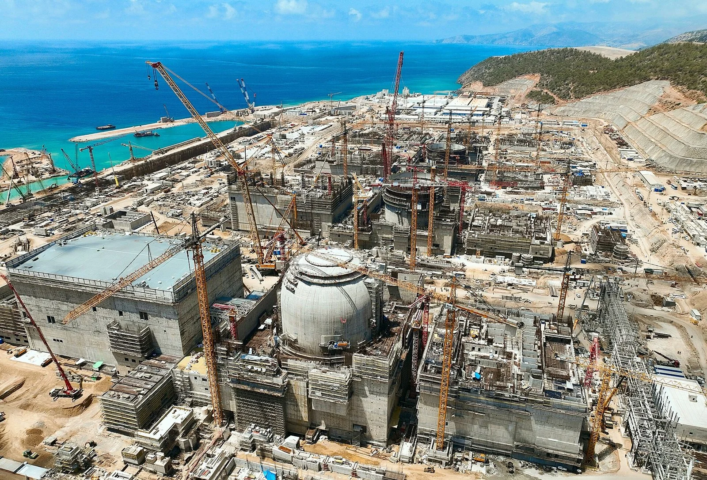
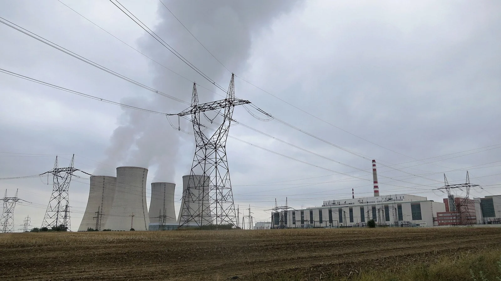
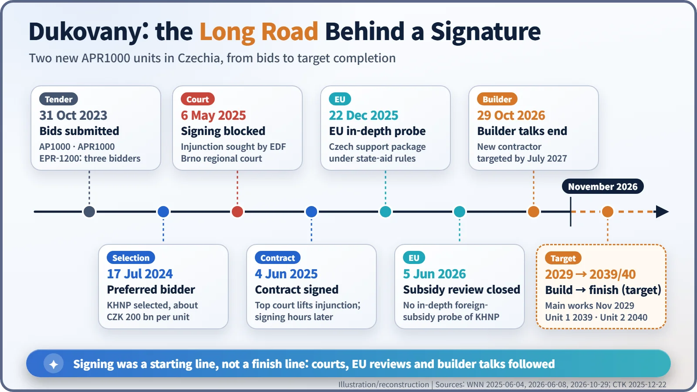

Nuclear History · 297
A Map of the Reactor Race — Nuclear Export Competition, from Dukovany to the World
A contract signed hours after a court lifted its ban shows that selling reactors is a contest of finance, schedule, law and diplomacy as much as engineering.
On 4 June 2025 the Czech Republic signed a contract with Korea Hydro & Nuclear Power (KHNP) for two new reactors at Dukovany, only hours after a court lifted an order that had blocked the signing. The deal is a window on a global race in which Rosatom, China's state nuclear companies, EDF, Westinghouse and KHNP compete on finance, schedule, law and diplomacy as much as on engineering. Status of all projects as of November 2026.
A signature against the clock
"The contract for the completion of Dukovany has just been signed." That was Czech Prime Minister Petr Fiala (b. 1964) on 4 June 2025. What made the announcement unusual was the timing. That same morning, a court order still barred anyone from signing. Only after the country's Supreme Administrative Court lifted the order did the pens come out, a few hours later. Why should selling two reactors be such a cliff-hanger? [1]
A reactor is not a product, it is a century-long relationship
A large nuclear plant takes roughly a decade to plan and build and is designed to run for 60 years or more. Buyer and seller are tied together for close to a hundred years. So the contest is never only about engineering. Who lends the money (finance)? Who can finish on the promised date (schedule)? Are the design rights clean (law)? How do the two governments get along (diplomacy)? All of these go on the scales.
As demand for new reactors picked up again, five suppliers came to dominate the export market: Russia's Rosatom, China's state nuclear companies, France's EDF, America's Westinghouse and Korea Hydro & Nuclear Power (KHNP).
![Chart of selected nuclear export projects by supplier, as of November 2026. CNNC: Karachi 2 and 3 in Pakistan operating since 2021 to 2022, Chashma 5 under construction. EDF: Taishan 1 and 2 in China operating, Hinkley Point C in the UK under construction with unit 1 around 2030, Sizewell C with a final investment decision in July 2025. KHNP: Barakah 1 to 4 in the UAE operating, two new Dukovany units in Czechia signed in June 2025. Rosatom: Ostrovets in Belarus operating, Akkuyu in Turkiye, El Dabaa in Egypt and Rooppur in Bangladesh under construction. Westinghouse: Sanmen and Haiyang in China operating, three units in Pomerania, Poland, under permit review](../../assets/images/history/297-export-competition/fig1-export-suppliers.webp)
Five suppliers on one map
Rosatom builds the most abroad. According to the World Nuclear Association (WNA), its foreign order book stood at about $200 billion at the end of 2025, with around 20 reactors under construction outside Russia. At Akkuyu in Türkiye it is building four VVER-1200 pressurised water reactors on a build-own-operate basis, meaning the Russian side will own and run the plant. Four more units are under way at El Dabaa in Egypt and two at Rooppur in Bangladesh, where unit 1 received approval on 29 October 2026 to begin raising power. Long-term state loans covering 80–90% of project costs are often cited as Rosatom's strongest card. [6] [7]

China entered the market with its own third-generation design, the Hualong One. In March 2021 Karachi unit 2 in Pakistan became the first Hualong One abroad to connect to the grid, and unit 3 followed in 2022. At Chashma unit 5, where first concrete was poured in December 2024, Chinese lenders are financing 85% of the cost. [6]
Westinghouse was chosen in autumn 2022 to supply three AP1000 units for Poland's first nuclear plant; a construction permit application was filed in March 2026. EDF is building two EPRs at Hinkley Point C in the UK, with unit 1 expected around 2030, and holds a 12.5% stake in Sizewell C, which reached its final investment decision in July 2025. Korea's first export was four reactors at Barakah in the United Arab Emirates, won in December 2009 and all completed by 2024. Its second stage was the Czech Republic. [6] [8]

Dukovany: from a three-way contest to the courtroom
Dukovany supplies about a third of Czech electricity, and its ageing reactors needed successors. In 2021 the Czech government excluded Chinese and Russian bidders, and on 31 October 2023 it received three bids: Westinghouse's AP1000, KHNP's APR1000 and EDF's EPR-1200.
On 17 July 2024 the government named KHNP as preferred bidder. Its price, if two units were ordered, was about CZK 200 billion (about $8.6 billion) per unit. EDF, the losing bidder, argued that such an offer would be "unfeasible without illegal state aid" and went to court. On 6 May 2025, the day before the planned signing, the regional court in Brno issued an injunction blocking it. When the Supreme Administrative Court overturned that injunction on 4 June, the contract was signed within hours. [1]

The signature was only the beginning
On 22 December 2025 the European Commission opened an in-depth investigation into whether the Czech government's support package complies with EU state-aid rules; the two units are estimated to cost about CZK 407 billion at current prices. A separate preliminary review of whether KHNP had benefited unfairly from foreign subsidies ended on 5 June 2026 without an in-depth probe. [2] [4]
Design rights were another thread. In January 2025, KHNP and its parent KEPCO announced a settlement with Westinghouse ending their dispute over intellectual property. The terms were confidential. When parts of them were reported in Korean media in August 2025, a debate broke out in Korea over whether the deal was fair; the companies declined to disclose details, citing confidentiality. [5]
Then, on 29 October 2026, KHNP said it had ended negotiations with its original construction consortium and would select a new contractor, after the two sides failed to agree on how to price the work and share the risks. The reported schedule, as of November 2026, is main construction from November 2029 and completion of unit 1 in 2039 and unit 2 in 2040. [3]
As much about finance and law as technology
Dukovany's two-plus years compress the reality of nuclear exports into one story. Price and design performance are only the entry ticket. Before concrete is poured, a project may have to clear state-aid reviews, lawsuits and the question of who carries construction risk. Each supplier brings different strengths: financing packages that bundle loans with operation, supply chains honed by steady construction at home, long licensing experience, or a record of finishing on time. Which matters most depends on the buyer's own circumstances.